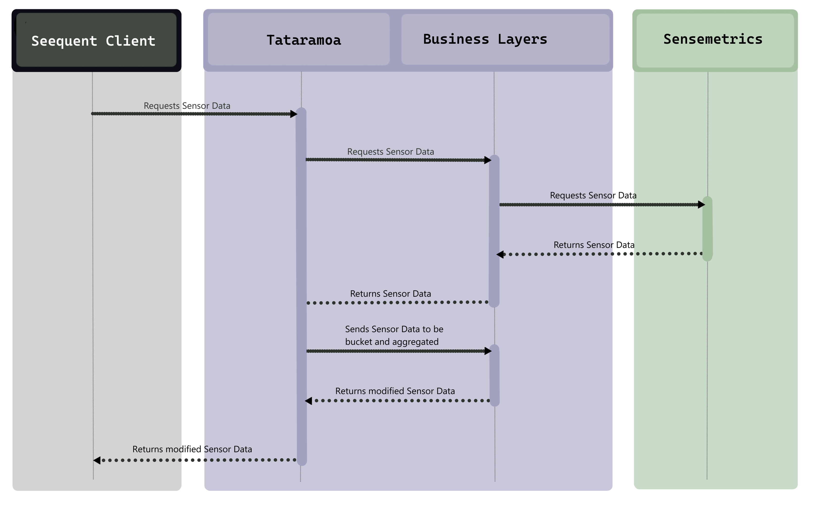

Tātarāmoa
As part of the BICT at Ara Institute of Canterbury, The final part of the degree was a work integrated learning project. I was lucky enough to intern at a large Christchurch Geo-Modelling company called Seequent. This company was very well established and could teach me much.
Seequent Product - Geostudio
Seequent.comThe Business Value
With the acquisition of Seequent and Sensemetrics into the Bentley Systems family, a possible resource/oppurtunity was not being explored. this oppurtunity was for Seequent-applications to use Sensemetrics data to help provide further information to Seequent clientele.
The Project
To manage time and work I used excel to map hours which could automatically update a burndown chart. This provided a clear visual representation of whether the project and academic deliverables were on track.
Excel Time Planning
Burndown Chart
Methodology - Scrum
The ideal methodology for the project was Scrum, as many stakeholders would be involved and requirements were not clear at the start of development. It was also likely that these requirements would need to be tweaked during development. As scrum was already the methodology of choice for many of the Seequent teams, it was very easy to merge Tātarāmoa with the existing teams processes.
The Scrum Lifecycle
Scrum.orgRisk and Quality Management
The Microsoft risk management excel tool was used to record identified risks, estimate their likelihood/impact and quantify each risk. From this mitigation and contingency plans could be made and would be incorporated into the planning of the overall process.
Risk Management Plan
The Quality assurance plan consisted of white and black box testing for the API as well as quality assurance and quality control tables (based on the Virginia Tech model). these tables identified processes, deliverables and increments. Many of these were easily evidenced by many of the quality assurance measured already implemented in Seequent such as, GitHub Pull-Requests, definitions of done and Jira tickets.
Quality Assurance Table
What was Learned
This experience was fantastic for developing myself as a software developer. It was an introduction to the implementation of processes within larger organisations and I was able to learn and discuss best practices and concepts with more senior developers.
The Final Deliverables
along with the numerous academic deliverables such as reports and methodology essays The main industry deliverables at the end of the project was Tataramoa - A proxy/facade API for allowing Seequent client applications to talk to the Sensemetrics API.
Tātarāmoa - Sequence Diagram
This could allow for the implementation of Seequents on standard auth, the bucketing and aggregation of data while removing some of the complexity in communicating with Sensemetrics.